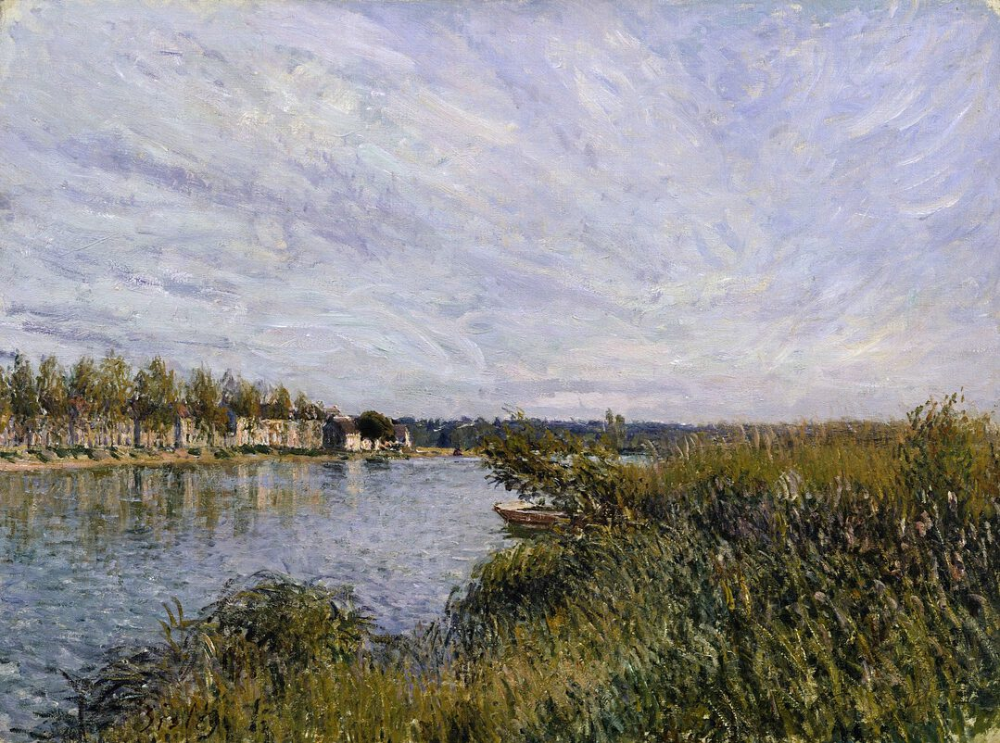
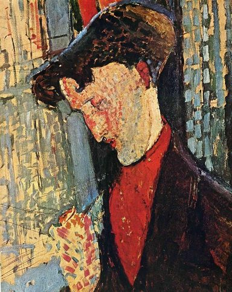
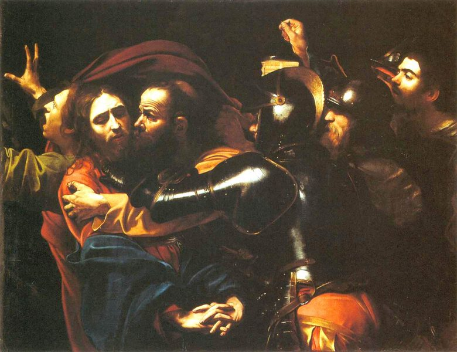
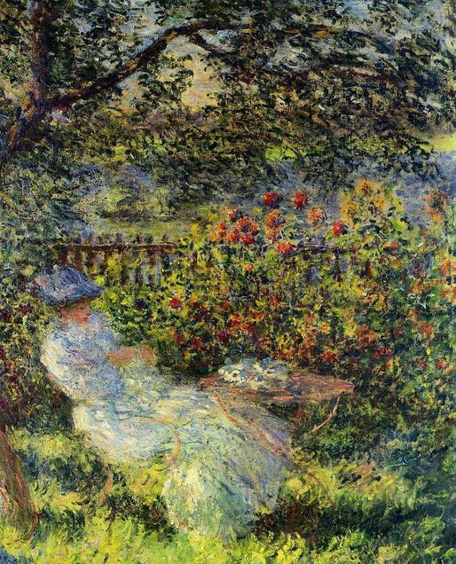
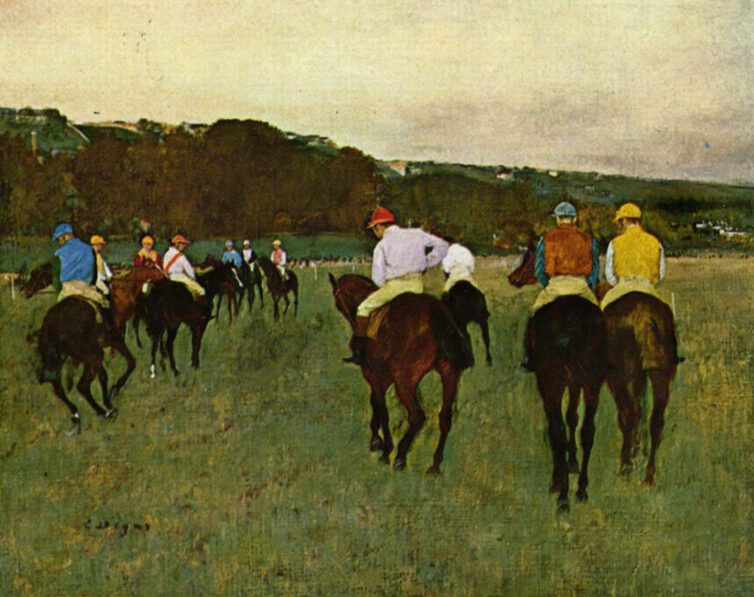
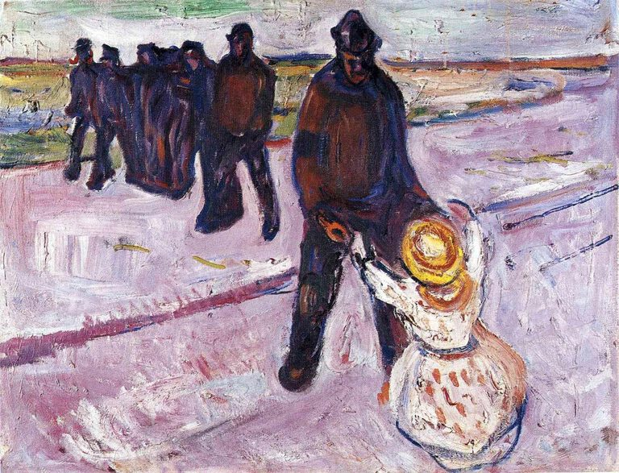
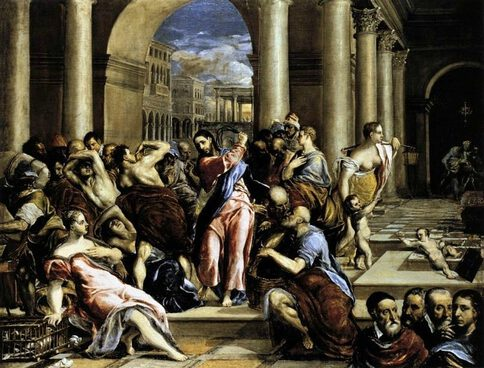
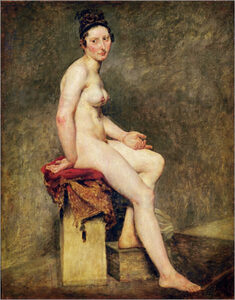
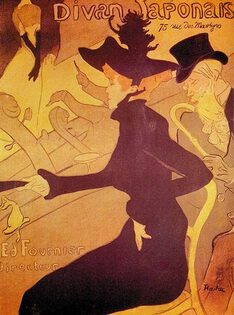

Vincent Van Gogh
Vincent Van Gogh
Vincent Willem van Gogh (Dutch: [ˈvɪnsɛnt ˈʋɪləm vɑŋ ˈɣɔx] (listen); 30 March 1853 – 29 July 1890) was a Dutch Post-Impressionist painter who is among the most famous and influential figures in the history of Western art. In just over a decade he created about 2,100 artworks, including around 860 oil paintings, most of them in the last two years of his life. They include landscapes, still lifes, portraits and self-portraits, and are characterised by bold colours and dramatic, impulsive and expressive brushwork that contributed to the foundations of modern art. However, he was not commercially successful, and his suicide at 37 followed years of mental illness and poverty.
 Joseph Mallord William Turner
Joseph Mallord William Turner
Joseph Mallord William Turner (23 April 1775 – 19 December 1851), known as J. M. W. Turner and contemporarily as William Turner, was an English Romantic painter, printmaker and water colourist. He is known for his expressive colourisations, imaginative landscapes and turbulent, often violent marine paintings.

Alfred Sisley
Alfred Sisley (/ˈsɪsli/; French: [sislɛ]; 30 October 1839 – 29 January 1899) was an Impressionist landscape painter who was born and spent most of his life in France, but retained British citizenship. He was the most consistent of the Impressionists in his dedication to painting landscape en plein air (i.e., outdoors). He deviated into figure painting only rarely and, unlike Renoir and Pissarro, found that Impressionism fulfilled his artistic needs.

Amedeo Modigliani
Amedeo Clemente Modigliani (US: /ˌmoʊdiːlˈjɑːni/, Italian: [ameˈdɛːo modiʎˈʎaːni]; 12 July 1884 – 24 January 1920) was an Italian Jewish painter and sculptor who worked mainly in France. He is known for portraits and nudes in a modern style characterized by a surreal elongation of faces, necks, and figures that were not received well during his lifetime, but later became much sought-after. Modigliani spent his youth in Italy, where he studied the art of antiquity and the Renaissance. In 1906, he moved to Paris, where he came into contact with such artists as Pablo Picasso and Constantin Brâncuși. By 1912 Modigliani was exhibiting highly stylized sculptures with Cubists of the Section d'Or group at the Salon d'Automne.
 Andy Warhol
Andy Warhol
Andy Warhol (/ˈwɔːrhɒl/;[1] born Andrew Warhola; August 6, 1928 – February 22, 1987) was an American artist, film director, and producer who was a leading figure in the visual art movement known as pop art. His works explore the relationship between artistic expression, advertising, and celebrity culture that flourished by the 1960s, and span a variety of media, including painting, silkscreening, photography, film, and sculpture. Some of his best known works include the silkscreen paintings Campbell's Soup Cans (1962) and Marilyn Diptych (1962), the experimental films Empire (1964) and Chelsea Girls (1966), and the multimedia events known as the Exploding Plastic Inevitable (1966–67).
 Camille Pissarro
Camille Pissarro
Camille Pissarro (/pɪˈsɑːroʊ/ piss-AR-oh, French: [kamij pisaʁo]; 10 July 1830 – 13 November 1903) was a Danish-French Impressionist and Neo-Impressionist painter born on the island of St Thomas (now in the US Virgin Islands, but then in the Danish West Indies). His importance resides in his contributions to both Impressionism and Post-Impressionism. Pissarro studied from great forerunners, including Gustave Courbet and Jean-Baptiste-Camille Corot. He later studied and worked alongside Georges Seurat and Paul Signac when he took on the Neo-Impressionist style at the age of 54.

Carvaggio
Michelangelo Merisi (Michele Angelo Merigi or Amerighi) da Caravaggio, known as Caravaggio (/ˌkærəˈvædʒioʊ/, US: /-ˈvɑːdʒ(i)oʊ/, Italian pronunciation: [mikeˈlandʒelo meˈriːzi da kkaraˈvaddʒo]; 29 September 1571[2] – 18 July 1610), was an Italian painter active in Rome for most of his artistic life. During the final four years of his life he moved between Naples, Malta, and Sicily until his death. His paintings combine a realistic observation of the human state, both physical and emotional, with a dramatic use of lighting, which had a formative influence on Baroque painting.

Claude Monet
Oscar-Claude Monet (French: [klod mɔnɛ]; 14 November 1840 – 5 December 1926) was a French painter and founder of impressionist painting who is seen as a key precursor to modernism, especially in his attempts to paint nature as he perceived it.[1] During his long career, he was the most consistent and prolific practitioner of impressionism's philosophy of expressing one's perceptions before nature, especially as applied to plein air (outdoor) landscape painting.[2] The term "Impressionism" is derived from the title of his painting Impression, soleil levant, exhibited in 1874 in the first Salon des Refusés ("exhibition of rejects") initiated by Monet and his associates as an alternative to the Salon.
 Diego Rivera
Diego Rivera
Diego María de la Concepción Juan Nepomuceno Estanislao de la Rivera y Barrientos Acosta y Rodríguez,[1] known as Diego Rivera (Spanish pronunciation: [ˈdjeɣo riˈβeɾa]; December 8, 1886 – November 24, 1957), was a prominent Mexican painter. His large frescoes helped establish the mural movement in Mexican and international art.
 Diego Velazquez
Diego Velazquez
Diego Rodríguez de Silva y Velázquez[a] (baptized June 6, 1599 – August 6, 1660) was a Spanish painter, the leading artist in the court of King Philip IV and of the Spanish Golden Age. He was an individualistic artist of the contemporary Baroque period. He began to paint in a precise tenebrist style, later developing a freer manner characterized by bold brushwork. In addition to numerous renditions of scenes of historical and cultural significance, he painted scores of portraits of the Spanish royal family and commoners, culminating in his masterpiece Las Meninas (1656).

Edgar Degas
Edgar Degas (UK: /ˈdeɪɡɑː/, US: /deɪˈɡɑː, dəˈɡɑː/;[1][2] born Hilaire-Germain-Edgar De Gas, French: [ilɛːʁ ʒɛʁmɛ̃ ɛdɡaʁ də ɡa]; 19 July 1834 – 27 September 1917) was a French Impressionist artist famous for his pastel drawings and oil paintings.

Edvard Munch
Edvard Munch (/mʊŋk/ MUUNK;[1] Norwegian: [ˈɛ̀dvɑʈ ˈmʊŋk] (About this soundlisten); 12 December 1863 – 23 January 1944) was a Norwegian painter. His best known work, The Scream, has become one of the iconic images of world art.

El Greco
Doménikos Theotokópoulos (Greek: Δομήνικος Θεοτοκόπουλος [ðoˈminikos θeotoˈkopulos]; 1 October 1541 – 7 April 1614),[2] most widely known as El Greco ("The Greek"), was a Greek painter, sculptor and architect of the Spanish Renaissance. "El Greco" was a nickname,[a][b] a reference to his Greek origin, and the artist normally signed his paintings with his full birth name in Greek letters, Δομήνικος Θεοτοκόπουλος (Doménikos Theotokópoulos), often adding the word Κρής (Krēs), Cretan.

Eugene Delacroix
Ferdinand Victor Eugène Delacroix (/ˈdɛləkrwɑː, ˌdɛləˈkrwɑː/ DEL-ə-krwah, DEL-ə-KRWAH;[1] French: [øʒɛn dəlakʁwa]; 26 April 1798 – 13 August 1863) was a French Romantic artist regarded from the outset of his career as the leader of the French Romantic school.
 Francisco Goya
Francisco Goya
Francisco José de Goya y Lucientes (/ˈɡɔɪə/; Spanish: [fɾanˈθisko xoˈse ðe ˈɣoʝa i luˈθjentes]; 30 March 1746 – 16 April 1828) was a Spanish romantic painter and printmaker. He is considered the most important Spanish artist of the late 18th and early 19th centuries.[1] His paintings, drawings, and engravings reflected contemporary historical upheavals and influenced important 19th- and 20th-century painters.[2] Goya is often referred to as the last of the Old Masters and the first of the moderns.
 Frida Kahlo
Frida Kahlo
Magdalena Carmen Frida Kahlo y Calderón (Spanish pronunciation: [ˈfɾiða ˈkalo]; 6 July 1907 – 13 July 1954[1]) was a Mexican painter known for her many portraits, self-portraits, and works inspired by the nature and artifacts of Mexico. Inspired by the country's popular culture, she employed a naïve folk art style to explore questions of identity, postcolonialism, gender, class, and race in Mexican society.[2] Her paintings often had strong autobiographical elements and mixed realism with fantasy. In addition to belonging to the post-revolutionary Mexicayotl movement, which sought to define a Mexican identity, Kahlo has been described as a surrealist or magical realist.[3] She is known for painting about her experience of chronic pain.
 Giotto di Bondone
Giotto di Bondone
Giotto di Bondone (Italian pronunciation: [ˈdʒɔtto di bonˈdoːne]; c. 1267[a] – January 8, 1337),[2][3] known mononymously as Giotto (UK: /ˈdʒɒtoʊ/,[4] US: /dʒiˈɒtoʊ, ˈdʒɔːtoʊ/)[5][6] and Latinised as Giottus, was an Italian painter and architect from Florence during the Late Middle Ages. He worked during the Gothic/Proto-Renaissance period.[7] Giotto's contemporary, the banker and chronicler Giovanni Villani, wrote that Giotto was "the most sovereign master of painting in his time, who drew all his figures and their postures according to nature" and of his publicly recognized "talent and excellence".[8] Giorgio Vasari described Giotto as making a decisive break with the prevalent Byzantine style and as initiating "the great art of painting as we know it today, introducing the technique of drawing accurately from life, which had been neglected for more than two hundred years".
 Gustav Klimt
Gustav Klimt
Gustav Klimt (July 14, 1862 – February 6, 1918) was an Austrian symbolist painter and one of the most prominent members of the Vienna Secession movement. Klimt is noted for his paintings, murals, sketches, and other objects d'art. Klimt's primary subject was the female body,[1] and his works are marked by a frank eroticism.[2] Amongst his figurative works, which include allegories and portraits, he painted landscapes. Among the artists of the Vienna Secession, Klimt was the most influenced by Japanese art and its methods.
 Gustave Courbet
Gustave Courbet
Jean Désiré Gustave Courbet (UK: /ˈkʊərbeɪ/ KOOR-bay,[1] US: /kʊərˈbeɪ/ koor-BAY,[2] French: [ɡystav kuʁbɛ]; 10 June 1819 – 31 December 1877)[3] was a French painter who led the Realism movement in 19th-century French painting. Committed to painting only what he could see, he rejected academic convention and the Romanticism of the previous generation of visual artists. His independence set an example that was important to later artists, such as the Impressionists and the Cubists. Courbet occupies an important place in 19th-century French painting as an innovator and as an artist willing to make bold social statements through his work.

Henri de Toulouse-Lautrec
Henri Marie Raymond de Toulouse-Lautrec-Monfa (24 November 1864 – 9 September 1901) was a French painter, printmaker, draughtsman, caricaturist and illustrator whose immersion in the colorful and theatrical life of Paris in the late 19th century allowed him to produce a collection of enticing, elegant, and provocative images of the modern, sometimes decadent, affairs of those times.

 Henri Matisse
Henri Matisse
Henri Émile Benoît Matisse (French: [ɑ̃ʁi emil bənwɑ matis]; 31 December 1869 – 3 November 1954) was a French artist, known for both his use of colour and his fluid and original draughtsmanship. He was a draughtsman, printmaker, and sculptor, but is known primarily as a painter.[1] Matisse is commonly regarded, along with Pablo Picasso, as one of the artists who best helped to define the revolutionary developments in the visual arts throughout the opening decades of the twentieth century, responsible for significant developments in painting and sculpture.